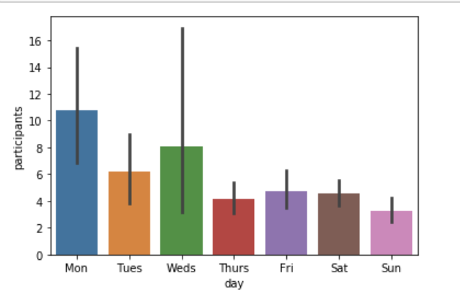
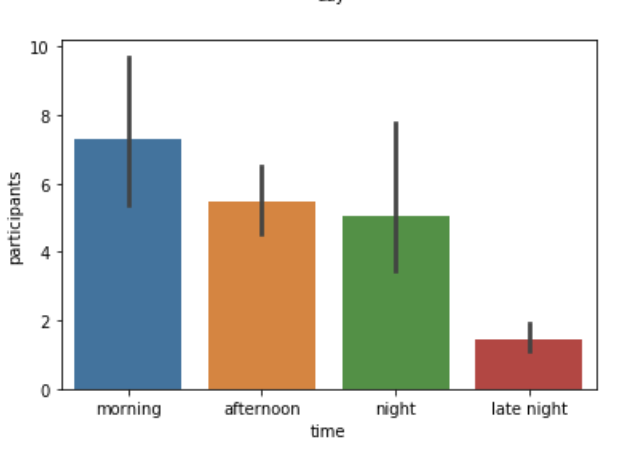
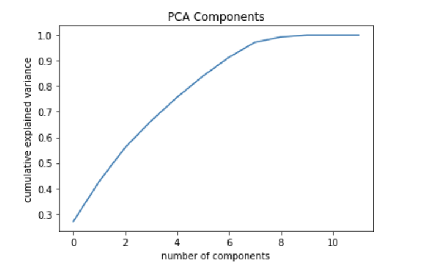
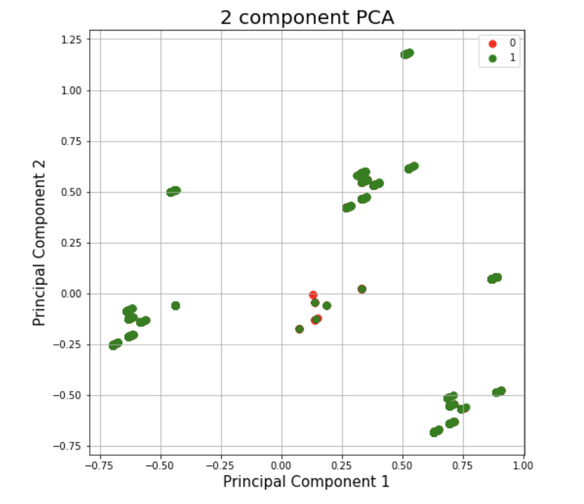
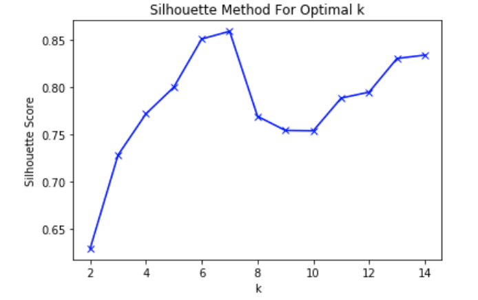
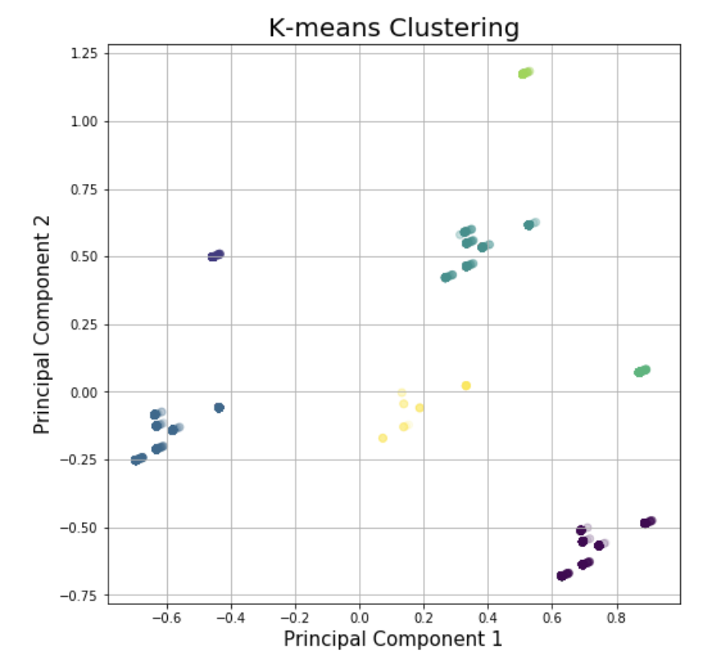
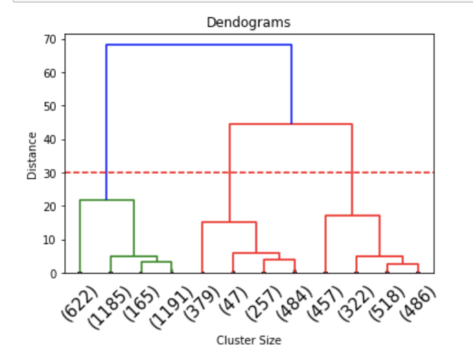
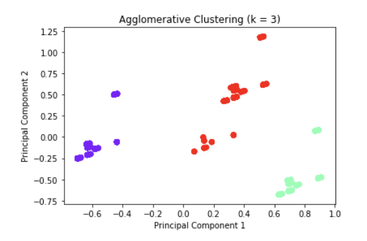
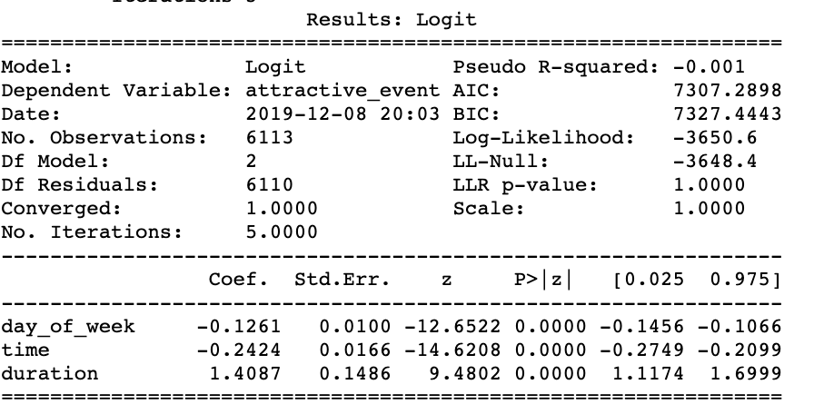

Time Analysis
Factors: day of week, day of time, event duration
In this section, our objective is to understand the effect of time on event attractivenss. We will use two approaches: clustering and regression.
Time and Participants
- Day of Week with Participants 
- Day of Time with Participants 
First, we explore the relationship between day of week and participants, day of time with participants.
In the graph of day of week and participants, we could see that Monday is the most popular day.
In the graphs of day of time and participants, we could see that "Morning" is the most popular time for people to attend the event.
Clustering - Dimension Reduction
- 2 Component PCA vs Attractive Event 
- Number of Components vs Explained Variance 
In order to interprete variables easily in clustering result, we choose PCA to reduce our dimentions. In the first graph, it shows 2 component PCA. Cases in green means attractive events, cases in red means not attractive events.
The explained variance is 0.43 for 2 component PCA. In the second graph, we could observe the relationship between components and explained variance. There is not an optimal components we could choose. Therefore, we still use 2 components in the following clustering analysis.
Clustering - K-Means
- Silhouette Method For Optimal k 
- K-means Clustering 
We try to use k-means clustering to find whether these time variables could give some clusters and help analysis. First, we use Silhouette method to find the optimal k. In the first graph, we could find that k should be 7.
The result of K-means clustering is in the second graph. The silhouette score is 0.86.
Clustering - Hierarchical
- Dendograms 
- Hierarchical Clustering 
We try to use hierarchical clustering to find whether these time variables could give some clusters and help analysis. First, we use dengograms method to find the proper k. In the first graph, we could find that k should be 3.
The result of hierarchical clustering is in the second graph. The silhouette score is 0.73.
From the result, k-means has a bettern performance. However, we only cover 43% data due to dimension reduction. The result might not be representative. Besides, we cannot really tell what these two components stand for. Therefore, clustering is not a good way for this analysis.
Logit Regression
- Logit Regression Output 
- For similar interpretation and statement of hypothesis please refer to the page Predictive Analysis.
As clustering does not work well, we start to try logit regression to see whether it could help us to understand the relationship between these three time variables and attractive event.
The graph on the left shows the result.
H0: All the time related factors are statistically significant for predicting the probability of attractive events
HA: At least one factor does not have a relationship with the probability of attractive events
From the Logistic Regression Results, we observe that all the time related variables: day_of_week, time, duration are statistically significant for predicting the probability of attractive events.